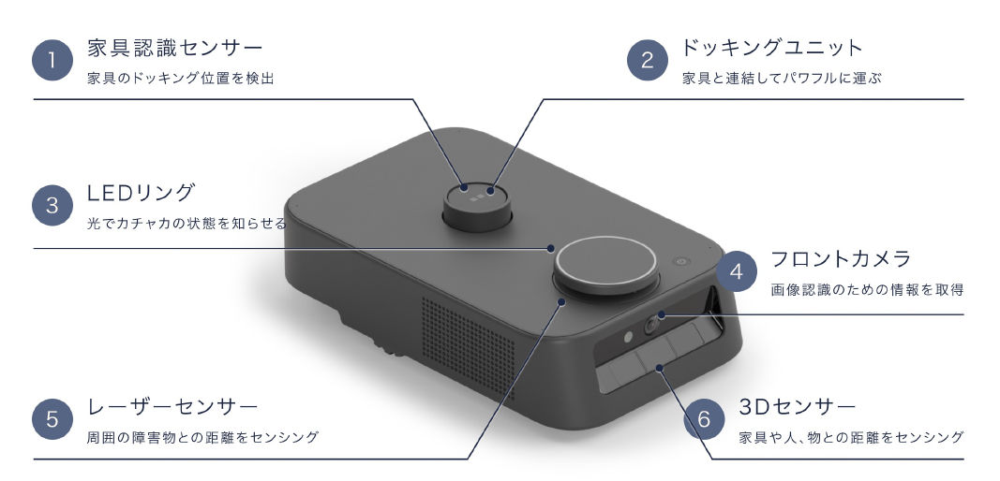
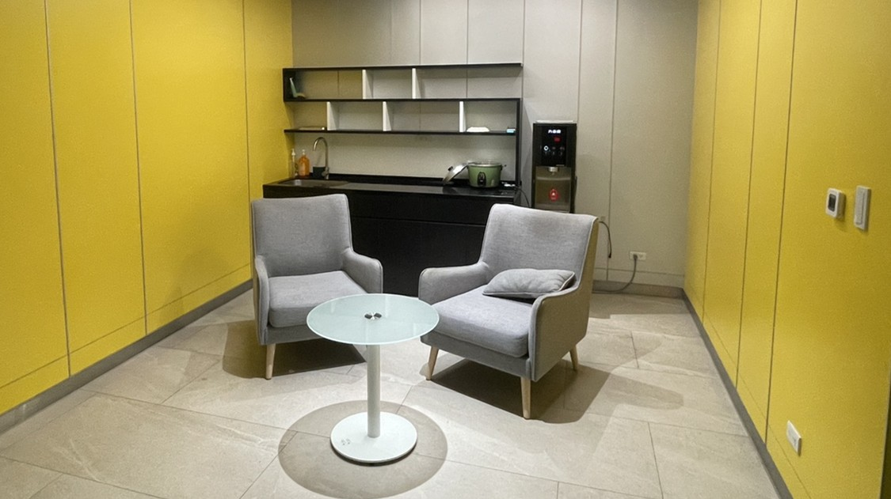
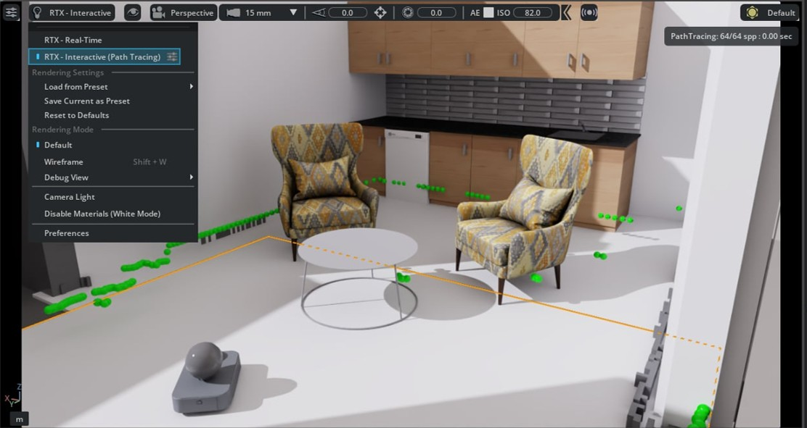

Facilities / Kachaka Pro
Kachaka Pro
室內自主移動、搬運、SLAM 建圖、RViz2 可視化與 Isaac Sim 虛擬場景重建平台。
Mobile Robot Platform
Kachaka Pro 智慧移動與虛實整合平台
Kachaka Pro 是實驗室可用於室內自主移動、搬運、SLAM 地圖建立、RViz2 可視化與 Isaac Sim 場景重建的 AMR 平台。此設備定位為研究與開發資源，可支援 AI、機器人導航、環境感知與數位孿生相關研究。
Indoor AMR
SLAM
ROS2 / RViz2
Isaac Sim

Hardware
硬體與感測器配置
Kachaka Pro 具備影像、距離與深度感測能力，可支援定位、避障、搬運與環境感知。產品背景可參考 Zeonic 介紹，其特色包含 SLAM 定位、窄道通行、客製化貨架、API 串接與多機管理等能力。

Digital Twin
現實場景與虛擬場景對比
將真實室內場域重建至 Isaac Sim，讓機器人定位、地圖、障礙物與任務路徑可以在 3D 虛擬空間中對照，形成數位孿生展示基礎。


Workflow
虛實整合流程
感測與建圖
於真實場域收集環境資訊，建立機器人可用地圖。
RViz2 可視化
觀察位置、地圖、感測資訊與導航狀態。
Isaac Sim 重建
依照家具、牆面與空間比例建立 3D 場景。
實機流程驗證
以實體 Kachaka Pro 進行搬運與導航流程展示。
Demo
操作展示
透過影片呈現 Kachaka Pro 在實際場域中的移動、搬運或平台測試流程。